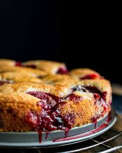

Plum Torte Recipe
This plum torte is my favorite thing to make during stone fruit season! You can substitute plums for any fruit of choice.
This recipe is originally from the New York Times

Ingredients
- 3/4 to 1 cup suger
- 1/2 cup unsalted butter, softened
- 1 cup bleached flour, sifted
- 1 teaspoon baking powder
- Pinch of salt
- 1 tsp vanilla extract
- 2 eggs
- 10-12 pitted plums
- Sugar, lemon juice, and cinnamon for topping
Instructions
- Heat oven to 350 degrees.
- Cream sugar and butter in a bowl. Add flour, baking powder, salt, and eggs. Beat well.
- Spoon the batter into a springform pan of 8 inches. Place plum halves skin side up on top of the batter.
Sprinkle lightly with sugar, lemon juice, and cinnamon.
- Bake for 1 hour. Remove and cool.